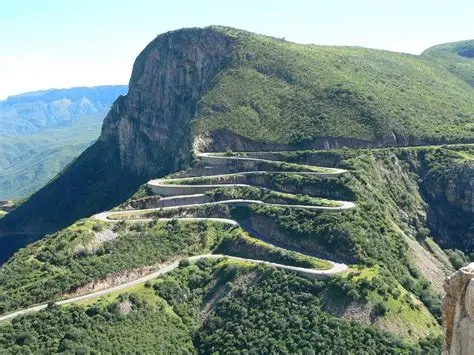
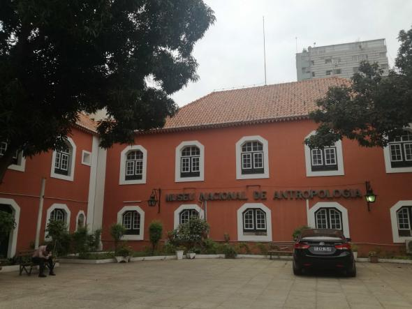
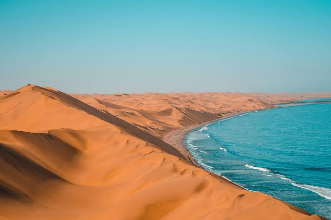
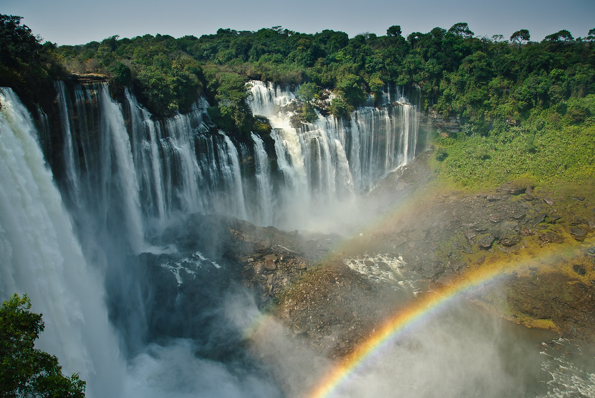

Serra da Leba: A Estrada Mais Famosa de Angola
Descubra a história e as belezas da Serra da Leba, um dos destinos mais impressionantes de Angola.
Ler maisArtigos, dicas e histórias sobre os destinos mais incríveis de Angola.

DestinosDescubra a história e as belezas da Serra da Leba, um dos destinos mais impressionantes de Angola.
Ler mais
CulturaConheça os principais museus da capital angolana e descubra a rica história e cultura do país.
Ler mais
AventuraPrepare-se para uma aventura única no deserto mais antigo do mundo, com dunas e paisagens surreais.
Ler mais Gastronomia
Gastronomia
Descubra os pratos típicos angolanos e os melhores restaurantes para provar a verdadeira culinária do país.
Ler mais
DicasPlaneie a sua viagem com estas dicas essenciais sobre transporte, segurança, clima e muito mais.
Ler mais Destinos
Destinos
Explore a vida selvagem no coração de Angola e descubra os animais que habitam o Parque da Kissama.
Ler mais